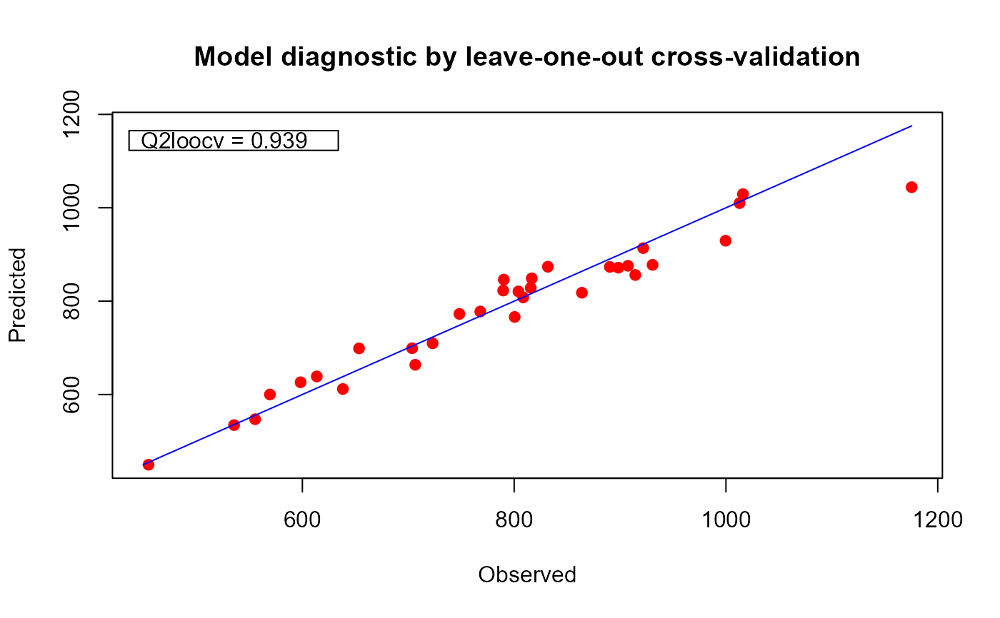

Retrieve the fgpm model with index (or rank) i from
within a Xfgpm object. By evaluating this code in an
environment containing suitable objects sIn, fIn and
sOut we can re-create a fgpm object.
modelDef(
object,
ind,
trace = TRUE,
pbars = TRUE,
control.optim = list(trace = TRUE)
)A Xfgpm object as created by
fgpm_factory.
The index (or rank) of the model in object.
An optional boolean indicating whether funGp-native progress
messages should be displayed. Default is TRUE. See the fgpm()
documentation for more details.
An optional boolean indicating whether progress bars managed by
fgpm() should be displayed. Default is TRUE. See the
fgpm() documentation for more details.
An optional list to be passed as the control argument to
optim(), the function in charge of the non-linear
optimization of the hyperparameters. Default is list(trace = TRUE). See the
fgpm() documentation for more details.
A parsed R code defining the fgpm model.
The models are sorted by decreasing quality so i = 1 extracts
the definition of the best model.
Remind that the models are sorted by decreasing quality so
i = 1 extracts the definition of the best model.
The [[,Xfgpm-method that can also be used
to re-create a fgpm object using the same data
as that used to create the Xfgpm object in
object.
## =========================================================================
## Using the pre-calculated object `xm` to save time. See `?xm` to re-create
## this object.
## =========================================================================
## 'xm@model' is the best 'fgpm' model in 'xm'
plot(xm@model)

## see the R code to use to recreate the model
modelDef(xm, i = 1)
#> expression(fgpm(sIn = sIn[, 2:5], fIn = fIn, sOut = sOut, f_disType = "L2_byindex",
#> f_pdims = c(1, 3), f_basType = "B-splines", kerType = "gauss",
#> trace = TRUE, pbars = TRUE, control.optim = list(trace = TRUE)))
if (FALSE) {
## Define new data in a list. Using an environment would also work,
## including the global environment, which is the default in `eval`.
L <- list()
set.seed(341)
n.new <- 3^5
x1 <- x2 <- x3 <- x4 <- x5 <- seq(0, 1, length = n.new^(1/5))
## create the data objects required to fit the model
L$sIn <- as.matrix(expand.grid(x1 = x1, x2 = x2, x3 = x3, x4 = x4, x5 = x5))
L$fIn <- list(f1 = matrix(runif(n.new * 10), ncol = 10),
f2 = matrix(runif(n.new * 22), ncol = 22))
L$sOut <- fgp_BB7(L$sIn, L$fIn, n.new)
## Now evaluate
fgpm.new <- eval(modelDef(xm, i = 1), envir = L)
plot(fgpm.new, main = "Re-created 'fgpm' model with different data")
plot(xm[[1]], main = "Re-created 'fgpm' model with the same data")
}